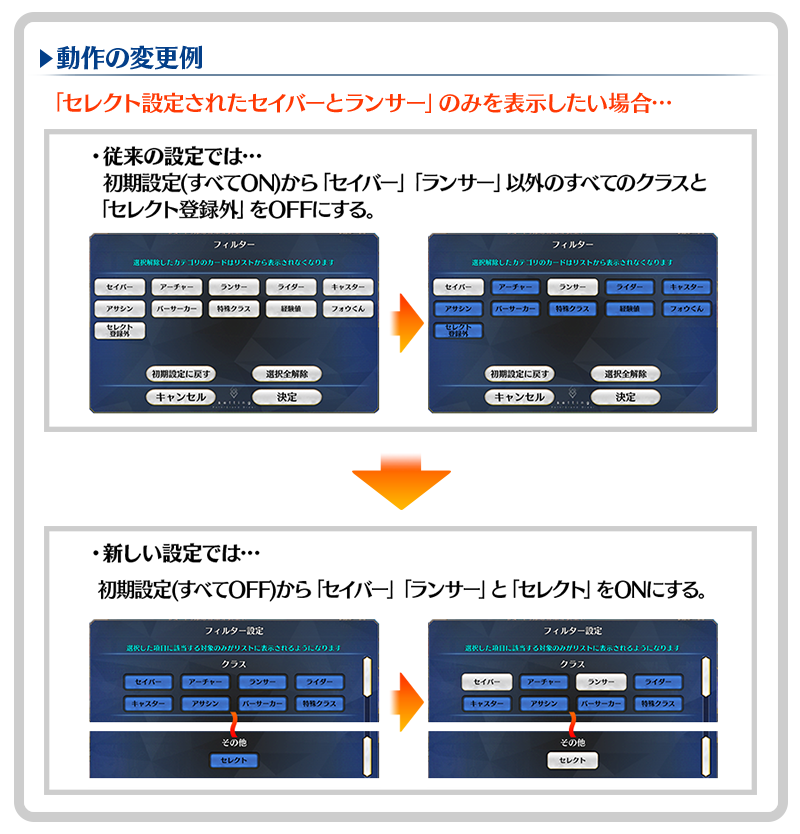
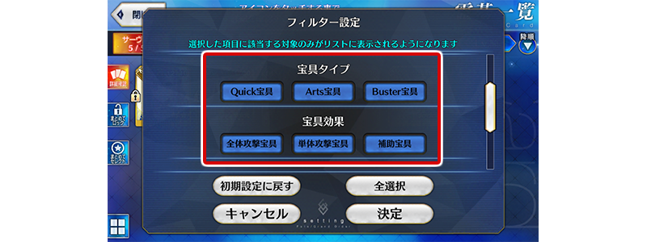
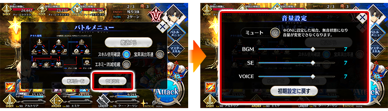

- 3/19
- 【來自迦勒底廣報局】關於3月的遊戲更新
非常感謝各位使用「Fate/Grand Order」。
來自迦勒底廣報局，告知關於預定2020年3月的下次遊戲更新。
以下介紹更新後反映的更新內容中，具有代表性的更新內容。
①篩選器功能的運作翻新
為了讓篩選器功能更容易操作，進行徹底地變更篩選器功能的運作。
・篩選器的初期設定全部變更成「OFF」。(之前是全部「ON」)
・篩選器設定分開成幾個不同的分類，各分類將對象縮小範圍。分類內的設定全部「OFF」的情況，不會進行該分類的縮小範圍。
・變更幾個篩選器設定的名稱變更。

※隨著翻新，所有篩選器的設定狀態將重置成初期設定。之前有設定篩選器的玩家，麻煩請再設定篩選器。 ※開發中畫面。
②在篩選器功能追加「寶具類型」和「寶具效果」
在選擇從者際時篩選器設定項目追加「寶具類型」和「寶具效果」。因此，能夠篩選出「只顯示持有以Quick全體攻擊寶具的從者」等。

※開發中畫面。
③在戰鬥時修改成更容易確認戰利品
點擊戰鬥畫面右上的寶箱圖示後修改成會顯示戰利品視窗。因此在戰鬥選單下方顯示的戰利品顯示會變更成移動到戰利品視窗的按鍵。
※開發中畫面。
④在戰鬥中修改成可變更各種音效音量變更
在戰鬥選單，修改成可進行與遊戲選項同様地各種音效的音量設定。變更過的音量設定在戰鬥結束後仍會保持。

※開發中畫面。
⑤卡片尺寸變更功能的對應畫面擴張
卡片尺寸變更功能，也擴張到我的最愛變更畫面和靈衣一覧畫面。
※開發中畫面。
以上為預定2020年3月實施的下次遊戲更新主要內容。
另外今後，也預定在期間限定活動和期間限定宣傳活動中，會有將通過主線關卡設為開放條件的情況。
無論如何，如果推進主線關卡的攻略會有所幫助。
今後也請多多指教「Fate/Grand Order」。